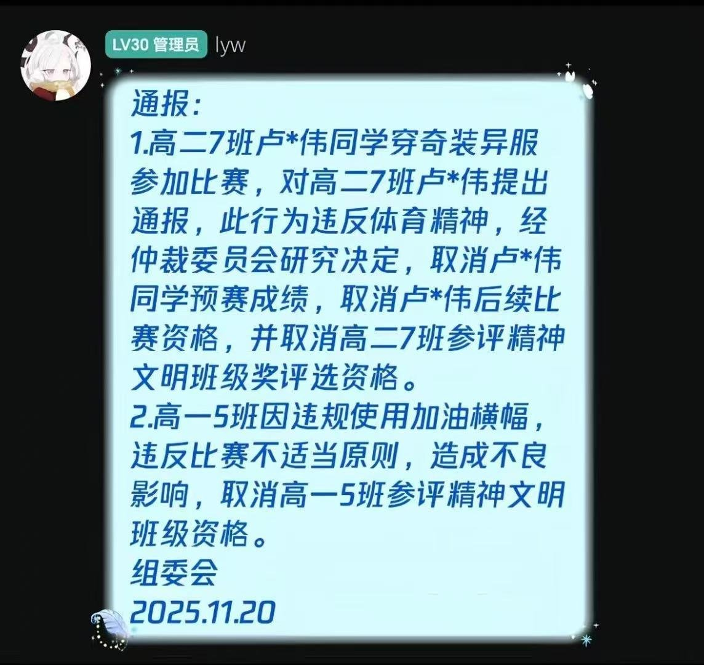
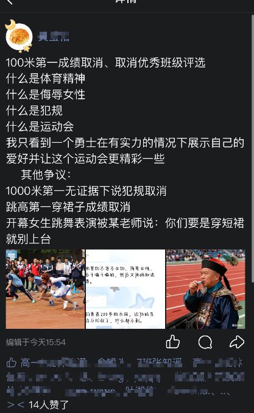
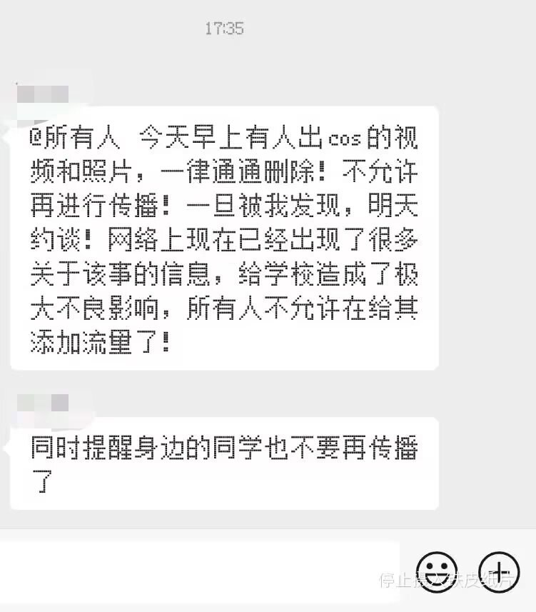

RT @whyyoutouzhele: 网友投稿：11月20日，福建省厦门市松柏中学举行运动会期间，一名高二男生身着cosplay服装参加1000米长跑并获得第一名。随后，学校以“奇装异服、影响校容校纪及有侮辱女性之嫌”为由，取消该生本次比赛成绩，同时取消其所在班级本年度精神文…




网友投稿：11月20日，福建省厦门市松柏中学举行运动会期间，一名高二男生身着cosplay服装参加1000米长跑并获得第一名。随后，学校以“奇装异服、影响校容校纪及有侮辱女性之嫌”为由，取消该生本次比赛成绩，同时取消其所在班级本年度精神文明班级评优资格。校方还在相关微信群内威胁学生不得将现场视频 https://t.co/duANWgcrg2